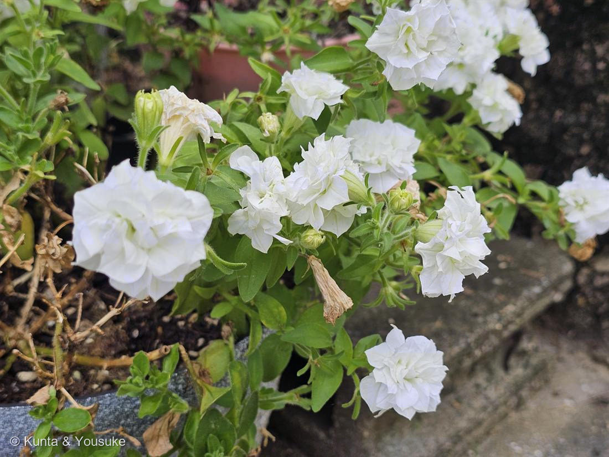

地図を読み込んでいるよ…
🔍 写真も地図も、押しているあいだ拡大して見られるよ（スマホは指を置いてすこし待ってね）。
🌍 の地図＝この子がもともと自生している場所を緑に。南アメリカ（ブラジル〜アルゼンチン）。園芸種は P. axillaris × P. integrifolia の交雑起源。
⚠⚠これは「親たちの故郷」。園芸のペチュニアは P. axillaris × P. integrifolia の交雑起源だから、この子自身の野生のふるさとは無いんだ。
⚠ 地図は国（日本と中国だけ県・省）までしか塗れないから、ほんとうの分布より広く見えていることがあるよ。地図はだいたいの場所。正確なところは、上の文を見てね。
ペチュニア（八重咲き・白）
Petunia × hybrida
和名 · ツクバネアサガオ（衝羽根朝顔）／園芸品種・品種名は特定不可
ナス科 · Solanaceae（ペチュニア属）
燻太さんの見立て「ナス科かな？ ペチュニアかなぁ？」……両方とも、正解。
名前と学名の由来 ── この花は「タバコ」の親戚
- Petunia（ペチュニア）＝ブラジル先住民トゥピ語の petun（タバコ）から。フランス語 petun を経て属名になった。
- つまり「タバコに似た草」。実際、ペチュニアはタバコ（Nicotiana）にとても近い仲間。ナス科のなかでも隣どうし。
- 和名 ツクバネアサガオ（衝羽根朝顔）＝がくの5裂が羽根つきの「衝羽根」に似て、花がアサガオに似るから。→ No.012 アサガオ（ヒルガオ科）とは科がちがう、他人の空似。
見立ての答え合わせ ── 決め手は3つ、全部この写真にある
- しおれた花（中央下）が、ラッパ形の筒になっている＝漏斗状の合弁花。ナス科ペチュニアの花のかたち。八重の花は花びらが重なって筒が見えにくいけれど、枯れると正体が出る。
- がくが5つに深く裂けて、細長い。
- 茎も葉も、べたべたした毛（腺毛）だらけ。ペチュニアを触ると手がべたつくのは、この毛のせい。
- カリブラコアは否定（花も葉ももっと小さい）。
- ナス科＝No.001 トマト・No.027 ニオイバンマツリと同じ科。図鑑で3種目のナス科。
この花の、ほんとうの重さ ── RNA干渉は、白いペチュニアから始まった
- 1990年。研究者たちは、ペチュニアの花をもっと濃い紫にしようとして、色素をつくる酵素の遺伝子（カルコン合成酵素 CHS）を余分に導入した。理屈のうえでは、色素が増えて濃くなるはずだった。
- ところが咲いたのは、真っ白な花と、斑入りの花だった。
- 遺伝子を足したのに、もとからあった遺伝子まで黙ってしまった。これを co-suppression（共抑制） という。（Napoli & Jorgensen 1990, The Plant Cell）
- この「意味がわからない」現象の正体を、人々は何年も追いかけた。行き着いた先が RNA干渉（RNAi）——二本鎖RNAが、配列の合う遺伝子を狙って黙らせるという、生き物に共通するしくみ。線虫で決着をつけた Fire と Mello は、2006年にノーベル生理学・医学賞を受けた。
- そのすべての出発点が、「白くなってしまったペチュニア」だった。
- ⚠念のため：目の前のこの白い花はふつうの園芸品種で、共抑制の実験株ではない。それでも——白いペチュニアを見るたびに、この話を思い出していい。
八重咲きの正体 ── 030 バラと、まったく同じ話
- 八重咲きは、雄しべになるはずだった場所が、花弁に変わったもの（ホメオティック変換）。
- 花のつくりを決める ABCモデルの、Cクラス遺伝子（AGAMOUS）の働く範囲が内側に狭まると、外側の「雄しべ予定地」が花弁になる。
- No.030 バラで書いたのと同じしくみ。バラでは AGAMOUS ホモログ RhAG、ペチュニアでも同じ C 機能の遺伝子が舞台。
- だから八重の花は、虫にとっては不親切。雄しべが減って、花粉が少ない。人が見て美しい形は、虫にとっての使いやすさとは別。
色素研究のふるさと ── そして「持っている子」
- ペチュニアは花色（アントシアニン）研究のモデル植物。色素をつくるスイッチ MBW複合体（R2R3-MYB＋bHLH＋WD40）の教科書は、ペチュニアで書かれた。
→ 007 シロツメクサの赤い模様も、015 ホーリーバジルの葉裏も、同じ R2R3-MYB の一族。 - ペチュニアは F3′5′H を持っている（だから青紫のペチュニアがある）。030 バラは持っていない。
- そして——世界で初めて商品化された遺伝子組換えの花「ムーンダスト」（青いカーネーション、1996年）に組み込まれたのは、ペチュニアの F3′5′H だった。
- → 028 ムラサキツユクサ（持っている）／030 バラ（持っていない）に続く、「持っている子」の3人目。しかも自分の遺伝子を、ほかの花に貸した子。
もうひとつ ── 送粉者を変える花
- 園芸のペチュニアは、2種の野生種の交雑から生まれた。
P. axillaris：白い花・夜に強く香る＝スズメガに来てもらう花。
P. integrifolia：紫の花・昼・香りは弱い＝ハチに来てもらう花。 - さらに近縁の P. exserta は赤い花で、ハチドリを呼ぶ。
- 色・香り・形を少し変えるだけで、来てくれる客が入れかわる。ペチュニア属は、その「送粉者シフト」を調べるための、世界でいちばん有名な舞台。
- → 027 ニオイバンマツリ（夜に香ってガを呼ぶ）・029 コエビソウ（ハチドリ用の赤い苞と細い筒）と、まっすぐつながる。